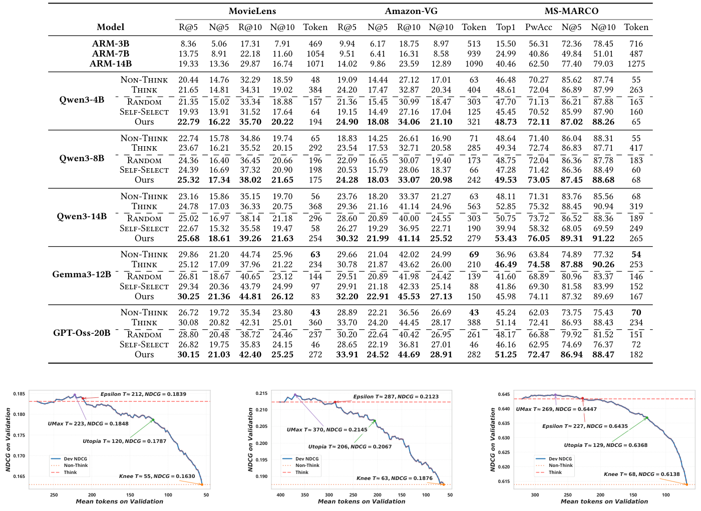
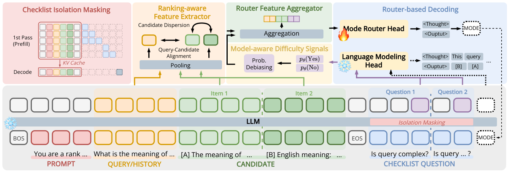
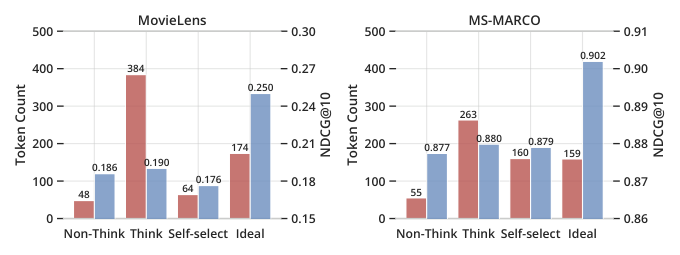
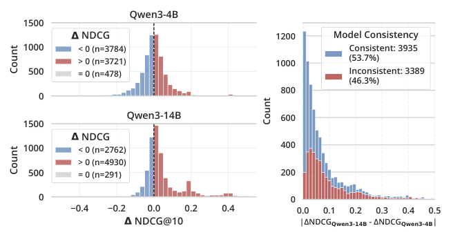
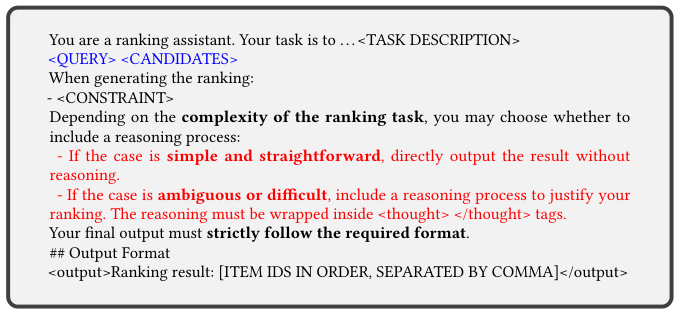
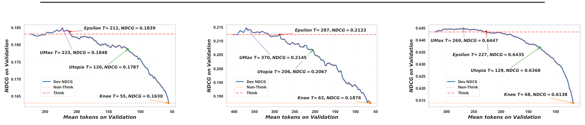

Think When Needed: Model-Aware Reasoning Routing for LLM-based Ranking (按需思考：面向 LLM 排序的模型感知推理路由)
- 会议/期刊: SIGIR 2026 (第 49 届国际 ACM SIGIR 会议)
- 推荐链路定位: 重排 (Re-ranking) / 列表级排序 (List-wise Ranking)
- 研究方向: 大语言模型推荐 (LLM4Rec) / 多任务学习与列表级重排
- 论文原文: https://arxiv.org/abs/2601.18146v2
- 开源代码: https://github.com/Grey-z/reasoning_router
TL;DR (核心速览)
针对 LLM 排序中"推理提示 (Think) 收益不一致且 token 开销巨大"的痛点，本文提出轻量即插即用的推理路由器 (Reasoning Router)：在生成前仅依赖排序感知特征（候选分散度、上下文-候选对齐）与模型感知难度信号（诊断清单的掩码响应概率），逐实例决定走 Non-Think 还是 Think。在 MS-MARCO、MovieLens、Amazon-VG 三个数据集上，配合 Qwen3-4B/8B/14B，实现精度提升同时 token 大幅下降（MovieLens + Qwen3-4B：NDCG@10 +6.3%，token −49.5%）。
Background & Motivation (背景与动机)
- 领域背景与主流范式: LLM 已被广泛用于 IR 与 Rec 的列表级排序，近期工作（如 Sun et al. [30]）表明推理提示 (Think) 能让模型通过多步推理区分近邻候选的相关性，提升排序质量。
- 现有方法局限 (Limitations of Prior Work):
- 收益不一致：图 1 显示 Think 平均提升 NDCG，但 token 消耗约为 Non-Think 的 7–8 倍；图 2(a) 进一步表明在 MS-MARCO + Qwen3-14B 上，35% 的实例 Non-Think 反而优于 Think，另有 3.6% 实例两种模式均零收益（超出模型能力）。
- LLM 自选模式不可靠：Self-Select 模式（让 LLM 自行决定是否推理）的排序效用显著低于始终 Think，说明当前 LLM 无法可靠评估实例难度或推理的边际收益。
- 模型依赖性：图 2(b) 显示同一实例在 Qwen3-4B 与 Qwen3-14B 上的最优模式判断有 46.3% 不一致，通用路由器无法跨模型迁移。
- 核心挑战 (Key Challenge): 排序任务的难度缺乏显式客观度量（候选间关系、查询-候选关联多因素交织）；且排序系统本质是成本敏感的——token 预算直接转化为系统延迟，不能像数学/代码任务那样以"最大化单实例正确率"为唯一目标。
- 核心洞察与切入点 (Key Insight): 作者通过诊断实验发现 Ideal 模式（oracle 逐实例选优）在 MovieLens 上可同时实现 NDCG +32% 与 token −55%，证明"何时推理与如何推理同等重要"。因此应设计一个在生成前即可决策的、模型感知的逐实例路由器。
Problem Formulation & Method (问题定义与方法架构)
1. 符号定义与输入表征 (Notations & Input Representations)
- 任务指令提示 \(P\)，候选集 \(\mathcal{I}=\{i_1,\dots,i_n\}\)，上下文 \(C\)（IR 中 \(C=Q\) 为查询；Rec 中 \(C=H=\{h_t\}_{t=1}^m\) 为用户历史），目标长度 \(K\le n\)。
- LLM \(f_\theta\) 为每个候选打分 \(s_\theta(i\mid P,C,\mathcal{I})\in\mathbb{R}\)，返回 top-\(K\) 列表 \(L_K=\tau_K(\{s_\theta(i\mid P,C,\mathcal{I}):i\in\mathcal{I}\})\)。
- 记 LLM 最后一层隐状态 \(S\in\mathbb{R}^{T\times d}\)（\(T\) 为输入 token 数，\(d\) 为隐维），\(\mathcal{T}_C\)、\(\mathcal{T}_i\) 分别为上下文段与第 \(i\) 个候选段的 token 索引集合。
2. 整体流水线 (Overall Architecture)
数据流：输入提示（含候选与诊断清单）→ 单次前向 prefill → 同时抽取 (i) 排序感知特征（段池化 + 统计量）与 (ii) 模型感知难度信号（清单问题掩码响应概率）→ 拼接送入轻量路由器头 → 输出控制 token（<Thought> 或 <Output>）→ 决定后续解码是否进入推理。全部组件在单次前向内完成，不修改骨干架构与解码流程。
flowchart TD
A["输入层: 提示 P + 上下文 C + 候选集 I + 诊断清单"] --> B["LLM 单次前向 Prefill (KV Cache)"]
B --> C1["排序感知特征提取器: 段池化 e_C, e_i + 统计特征"]
B --> C2["模型感知难度信号: 清单掩码响应概率 + 去偏聚合"]
C1 --> D["路由器特征聚合 (拼接)"]
C2 --> D
D --> E["轻量路由器头 → 控制 token"]
E --> F1["Non-Think: 直接输出排序"]
E --> F2["Think: 生成 thought 后输出排序"]
F1 --> G["Top-K 排序列表"]
F2 --> G3. 核心模块设计与数学原理 (Key Designs & Formulations)
(1) 排序感知特征提取器 (Ranking-Aware Feature Extractor)：对上下文段与候选段做池化得到段嵌入：
Rec 任务额外对每个历史物品提取 \(e_{h_t}=\text{pooling}(S_{\mathcal{T}_{h_t}})\)。特征沿两个维度组织： - 上下文/候选复杂度：上下文表征的集中度/漂移（查询具体性、用户兴趣稳定性）与候选集在嵌入空间的分布离散度（candidate dispersion）； - 上下文-候选对齐：\(e_C\) 与 \(\{e_i\}\) 的对齐程度及 top 候选的可区分性——高对齐意味着清晰的相关性线索适合 Non-Think，低对齐则提示 Think 可能更有益。
特征选择采用两阶段精炼：先用带稀疏正则的轻量预测器按路由目标筛除低贡献特征，再跨数据集与骨干模型做一致性分析，仅保留稳定特征。
(2) 模型感知难度信号 (Model-Aware Difficulty Signals)：在提示后缀插入少量领域定制的诊断 yes/no 问题作为掩码清单，通过隔离掩码 (Isolation Masking) 保证清单问题不干扰排序任务本身，读取 LLM 对这些问题的响应概率，经去偏与聚合后作为模型内部不确定性与潜在推理失败模式的信号。该信号与排序感知特征互补，且天然随骨干模型变化（解决图 2(b) 的跨模型不一致问题）。
(3) 轻量路由器头与帕累托策略选择：两类特征拼接后送入轻量路由器头，输出控制 token 决定模式。路由器被训练为估计"Think 相对 Non-Think 的期望效用增益"。部署时利用验证集帕累托前沿在多个操作点（Knee、Utopia、Epsilon、UMax，见图 5）间自适应选择策略，在给定计算约束下仅对预测收益最高的实例分配 Think。
4. 训练目标、负采样与推理复杂度 (Optimization, Negative Sampling & Complexity)
- 损失函数: 原文正文未给出完整损失公式（受篇幅限制，特征集与实现细节置于开源代码）。路由器以"是否应触发 Think"为二分类/效用回归目标训练，采用带稀疏诱导正则的轻量预测器做特征筛选。具体损失形式与权重原文未在正文完整报告。
- 训练负采样策略: 不适用（非召回/对比学习任务，无负采样环节）；训练样本为逐实例的 (特征, 最优模式标签) 对，标签由 Non-Think 与 Think 的实际 NDCG 对比生成。
- 时间与空间复杂度: 路由器所有组件在骨干 LLM 的单次前向 prefill 内完成，复用 KV Cache，不增加额外生成轮次；相比 Always-Think 可节省约 49.5% token（MovieLens + Qwen3-4B）。原文未报告具体 ms/request 延迟与峰值显存数值。
Experimental Setup & Evaluation Protocol (实验设置与评估协议)
- 数据集统计与预处理: 原文使用三个公开数据集，覆盖 IR 与 Rec 两类任务。原文正文未提供 #Users / #Items / #Interactions / 稀疏度的完整统计表（受 11 页篇幅限制），下表仅列出原文明确提及的信息：
| 数据集 (Dataset) | 用户数 (#Users) | 物品数 (#Items) | 交互数 (#Interactions) | 稀疏度/密度 (Sparsity) | 模态/辅助特征说明 |
|---|---|---|---|---|---|
| MS-MARCO [26] | - | - | - | - | IR 任务：查询-段落相关性排序 |
| MovieLens [11] | - | - | - | - | Rec 任务：电影推荐，用户历史为上下文 |
| Amazon-VG [21] | - | - | - | - | Rec 任务：视频游戏推荐 |
- 数据划分方式 (Splitting Strategy): 原文使用验证集做帕累托前沿策略选择（图 5 明确标注 "validation sets"），测试集报告主结果。具体划分比例（LOO / Ratio / 时间戳切分）原文正文未明确说明，需查阅开源代码确认。
- 排名评测协议 (Ranking Protocol): 采用列表级排序评测，指标为 NDCG@10（主指标）与 NDCG@100（图 1 中 MS-MARCO 报告）。是否为 Full-Ranking 或 Sampled Ranking 原文未明确说明；由于任务设定为"上游检索器/采样器提供候选集"，实际为给定候选集内的重排评测。
- 评价指标与显著性检验: NDCG@10 / NDCG@100；表 1 中所有分数指标乘以 100 以便阅读，并报告五次独立运行的平均值。原文未明确报告配对显著性检验（如 \(p<0.05\)）。
Key Experimental Results (核心实验结果)
1. 主实验对比 (Main Results)
表 1 报告了跨数据集与 LLM 骨干的排序效用与 token 成本。核心结论为：本文路由器在三个数据集、Qwen3-4B/8B/14B 三种规模上一致实现精度提升与 token 下降。代表性结果（MovieLens + Qwen3-4B）：NDCG@10 +6.3%，token −49.5%。图 1 的对照显示：MovieLens 上 Think 相对 Non-Think 仅提升 NDCG 2.1%（0.186→0.190）却消耗约 7 倍 token（48→384）；而 Ideal 模式可达 NDCG 0.250、token 174，验证了路由的潜在上限。
| 数据集 | 指标 | Non-Think | Think | Self-Select | 本文方法 (Ours) | 相对提升 (Improv.) |
|---|---|---|---|---|---|---|
| MovieLens (Qwen3-4B) | NDCG@10 / Token | 0.186 / 48 | 0.190 / 384 | 0.176 / 64 | +6.3% NDCG, −49.5% token | +6.3% |
| MS-MARCO (Qwen3-14B) | NDCG@100 / Token | 0.877 / 55 | 0.880 / 263 | 0.879 / 160 | 见表 1（原文报告） | 原文报告 |
注：表 1 完整数值（含 Amazon-VG 与 Qwen3-8B）请参见原文；上表仅提取正文明确给出的数字，其余标注"原文报告"以避免臆造。

2. 消融实验与控制变量分析 (Ablation Study)
原文通过特征来源的对照间接验证各模块贡献：排序感知特征单独刻画实例内在结构复杂度，模型感知难度信号单独刻画 LLM 自身对难度的感知；二者互补拼接。图 2(b) 的跨模型一致性分析（46.3% 不一致）直接支撑了模型感知信号的必要性。原文正文未提供逐模块移除的定量消融表格，完整消融见开源代码。

3. 稀疏度/冷启动分桶与超参敏感度 (Sparsity Buckets & Hyperparameters)
- 实例级分桶表现: 图 2(a) 按 ΔNDCG 符号分桶：MS-MARCO + Qwen3-4B 中 ΔNDCG<0 有 3784 例、>0 有 3721 例、=0 有 478 例；Qwen3-14B 中分别为 2762 / 4930 / 291 例。说明"何时不该推理"的实例占比极高，路由空间巨大。
- 关键超参数敏感度: 路由器在验证集帕累托前沿上提供 Knee、Utopia、Epsilon、UMax 四个操作点（图 5），对应不同 token 预算约束下的精度-效率权衡；具体超参（如路由器隐藏维、清单问题数量）原文正文未系统报告。
- 线上 A/B 测试结果: 原文仅包含离线实验，未报告线上 A/B 测试。




Highlights, Limitations & Critiques (亮点、局限与审稿级批判)
- 核心亮点与可迁移性:
- 问题形式化新颖：首次将"推理路由"形式化到排序任务，并用诊断实验（图 1、图 2）扎实论证"Think 非普适有益"与"LLM 自选不可靠"两大动机。
- 生成前决策 + 单次前向：路由器完全依赖 pre-generation 信号，复用 KV Cache，工程上即插即用，可直接迁移到任意 LLM 排序/重排管线。
- 模型感知设计：清单探测信号天然随骨干变化，解决了跨模型难度感知不一致（46.3%）的关键痛点；帕累托前沿策略选择使系统可在不同延迟约束下灵活部署。
- 局限性与审稿视角批判 (Critical Limitations):
- 评估协议透明度不足：正文未明确数据划分方式（LOO / Ratio / 时间戳）、候选集构造与是否 Full-Ranking，复现与公平比较存在障碍；亦未报告配对显著性检验。
- 效率证据偏弱：仅报告 token 数作为成本代理，缺少真实端到端延迟 (ms/request)、峰值显存与路由器自身开销的量化，而排序系统对延迟高度敏感，这是审稿人最可能质疑之处。
- 清单问题的领域定制成本：诊断清单需"领域定制"，跨域迁移时清单构造的人工成本与鲁棒性未讨论；特征集因篇幅被推至代码仓库，削弱了正文自洽性。
- 基线覆盖有限：未与已有的通用自适应推理方法（如长度惩罚 RL、latent reasoning）在排序任务上直接对比，仅与 Non-Think / Think / Self-Select 对照。
Rating (四维评分)
- 方法创新性 (Novelty): ⭐⭐⭐⭐
- 评估协议与实验扎实度 (Protocol & Experiments): ⭐⭐⭐
- 写作与数学规范度 (Clarity & Rigor): ⭐⭐⭐⭐
- 工业落地与复现价值 (Industrial & Practical Value): ⭐⭐⭐⭐